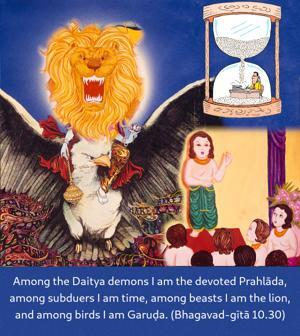
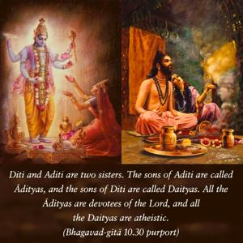
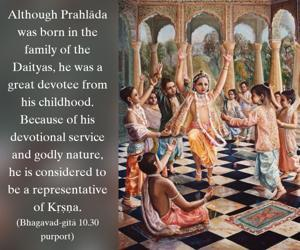
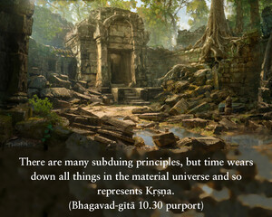

Among the Daitya demons I am the devoted Prahlāda, among subduers I am time, among beasts I am the lion, and among birds I am Garuḍa.




Diti and Aditi are two sisters. The sons of Aditi are called Ādityas, and the sons of Diti are called Daityas. All the Ādityas are devotees of the Lord, and all the Daityas are atheistic. Although Prahlāda was born in the family of the Daityas, he was a great devotee from his childhood. Because of his devotional service and godly nature, he is considered to be a representative of Kṛṣṇa.
There are many subduing principles, but time wears down all things in the material universe and so represents Kṛṣṇa. Of the many animals, the lion is the most powerful and ferocious, and of the million varieties of birds, Garuḍa, the bearer of Lord Viṣṇu, is the greatest.